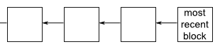
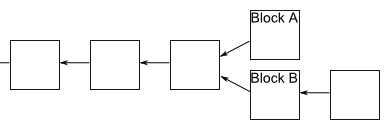

I’ll analyse double spending shortly. Before doing that, I want to fill in an important detail in the
description of potato-coin. We’d ideally like the potato-coin network to agree upon the order in which transactions have
occurred. If we don’t have such an ordering then at any given moment it may not be clear who owns which potato-coins.
To help do this we’ll require that new blocks always include a pointer to the last block validated in the chain, in
addition to the list of transactions in the block. (The pointer is actually just a hash of the previous block). So
typically the block chain is just a linear chain of blocks of transactions, one after the other, with later blocks each
containing a pointer to the immediately prior block:

Occasionally, a fork will appear in the block chain. This can happen, for instance, if by chance two miners happen
to validate a block of transactions near-simultaneously – both broadcast their newly-validated block out to the network,
and some people update their block chain one way, and others update their block chain the other way:
This causes exactly the problem we’re trying to avoid – it’s no longer clear in what order transactions have occurred,
and it may not be clear who owns which potato-coins. Fortunately, there’s a simple idea that can be used to remove any
forks. The rule is this: if a fork occurs, people on the network keep track of both forks. But at any given time,
miners only work to extend whichever fork is longest in their copy of the block chain.
Suppose, for example, that we have a fork in which some miners receive block A first, and some miners receive block B first.
Those miners who receive block A first will continue mining along that fork, while the others will mine along fork B. Let’s
suppose that the miners working on fork B are the next to successfully mine a block:

After they receive news that this has happened, the miners working on fork A will notice that fork B is now longer,
and will switch to working on that fork. Presto, in short order work on fork A will cease, and everyone will be working
on the same linear chain, and block A can be ignored. Of course, any still-pending transactions in A will still be pending
in the queues of the miners working on fork B, and so all transactions will eventually be validated.
Likewise, it may be that the miners working on fork A are the first to extend their fork. In that case work on fork B
will quickly cease, and again we have a single linear chain.
No matter what the outcome, this process ensures that the block chain has an agreed-upon time ordering of the blocks.
In Bitcoin proper, a transaction is not considered confirmed until: (1) it is part of a block in the longest fork, and (2)
at least 5 blocks follow it in the longest fork. In this case we say that the transaction has “6 confirmations”. This gives
the network time to come to an agreed-upon the ordering of the blocks. We’ll also use this strategy for potato-coin.
With the time-ordering now understood, let’s return to think about what happens if a dishonest party tries to double spend.
Suppose Alice tries to double spend with Bob and Charlie. One possible approach is for her to try to validate a block that
includes both transactions. Assuming she has one percent of the computing power, she will occasionally get lucky and validate
the block by solving the proof-of-work. Unfortunately for Alice, the double spending will be immediately spotted by other people
in the potato-coin network and rejected, despite solving the proof-of-work problem. So that’s not something we need to worry about.
A more serious problem occurs if she broadcasts two separate transactions in which she spends the same potato-coin with Bob and
Charlie, respectively. She might, for example, broadcast one transaction to a subset of the miners, and the other transaction
to another set of miners, hoping to get both transactions validated in this way. Fortunately, in this case, as we’ve seen, the
network will eventually confirm one of these transactions, but not both. So, for instance, Bob’s transaction might ultimately
be confirmed, in which case Bob can go ahead confidently. Meanwhile, Charlie will see that his transaction has not been
confirmed, and so will decline Alice’s offer. So this isn’t a problem either. In fact, knowing that this will be the case,
there is little reason for Alice to try this in the first place.
An important variant on double spending is if Alice = Bob, i.e., Alice tries to spend a coin with Charlie which she
is also “spending” with herself (i.e., giving back to herself). This sounds like it ought to be easy to detect and deal
with, but, of course, it’s easy on a network to set up multiple identities associated with the same person or organization,
so this possibility needs to be considered. In this case, Alice’s strategy is to wait until Charlie accepts the potato-coin,
which happens after the transaction has been confirmed 6 times in the longest chain. She will then attempt to fork the
chain before the transaction with Charlie, adding a block which includes a transaction in which she pays herself:
Unfortunately for Alice, it’s now very difficult for her to catch up with the longer fork. Other miners won’t want to
help her out, since they’ll be working on the longer fork. And unless Alice is able to solve the proof-of-work at least as
fast as everyone else in the network combined – roughly, that means controlling more than fifty percent of the computing
power – then she will just keep falling further and further behind. Of course, she might get lucky. We can, for example,
imagine a scenario in which Alice controls one percent of the computing power, but happens to get lucky and finds six
extra blocks in a row, before the rest of the network has found any extra blocks. In this case, she might be able to
get ahead, and get control of the block chain. But this particular event will occur with probability 1/100^6 = 10^{-12}.
A more general analysis along these lines shows that Alice’s probability of ever catching up is infinitesimal, unless
she is able to solve proof-of-work puzzles at a rate approaching all other miners combined.
Implementation
With this method the blockchain becomes a tree (In the bitcoin protocol it's actually a Merkle tree to save space
for light clients, more on this here: https://en.wikipedia.org/wiki/Merkle_tree) where each block points toward the previous
one using the hash of this previous block. So to iterate on it we can do the following:
Now each time a user successfully validate a block he updates the branch he trusts by comparing the length of his previous
trusted branch with the new one. If the new branch is longer he accepts it, if not he add it to his local blockchain but doesn't
consider the branch to be the offcial one.
(The last block of the branch he trusts will be used as previous block if we happen to mine).
Demonstration
Transaction message:
Alice will then sign the message with her private key:
Bob can then verify that the message is from Alice by checking the signature, check that the hash is valid and that he
cannot be found in his local blockchain, he finds that is is:
But Bob do not consider the transaction "verified" yet. He will broadcast this message to all users in his network and ask them to verify the transaction
Users will respond to Bob that the message is correct considering their current blockchain
Bob can now give Alice the potato she bought him.
Mining
Flaw?
Of course, we haven't prooved that the Double-spending was impossible with our implementation of the potatocoin. The network part is
just a stub and the code haven't been really check for security flaws. The idea here was more to try to reproduce the different steps
that lead to the current design crypto-currencies are using.
The proof-of-work idea that we presented also raise questions that still not have been answered to this day. One them being: "What will happen if
the mining power ends up in the hands of few? Will the protocol be compromised?". Indeed with Bitcoin we saw a raise of huge mining farms that are
controlling a fairly good part of the mining power. This can be explain by a need to reduce mining cost by moving the farms where electricity is cheap
and by using dedicated GPU and such. Some crypto-currencies like monero protocol have tried to limit this last issue by making the mining protocol hard to optimize
on a dedicated GPU.
Another issue that appeared with bitcoin is the carbon print of the proof-of-work. Indeed the bitcoin miners alone spend around 1M$ worth of eletricity every day.
An answer ethereum and other crypto is trying to give to this problem is proof-of-stake, a protocol where the "mining" consist into validating transaction by blocking a part
of your wallet and receive interest for it: https://github.com/ethereum/wiki/wiki/Proof-of-Stake-FAQ
Crypto-currencies really seems at their early stage and the ideas that are floating around can be mind blowing. I hope this few pages made you enthousiast about the
technology and if you have any suggestion of improvment, question or if you just want to have a look at the code
here is the link to the github page.